L’énergie produite par la combustion des ordures ménagères, contenue sous forme de vapeur, peut se transformer en énergie électrique par l’intermédiaire du groupe turbo-alternateur. Cet équipement est devenu de nos jours l’un des éléments le plus important d’une UIOM, car il permet de vendre du courant électrique au réseau EDF.
Après avoir étudié ce module, vous comprendrez mieux, le rôle de la turbine à vapeur et celui de l’alternateur, leurs principes de fonctionnement, leurs constituants, les principes de régulation et les procédures de démarrage.
Le turbo-alternateur, plus communément appelé groupe turbo-alternateur (en abrégé GTA), est composé de deux éléments principaux, la turbine et l’alternateur, qui ont des fonctions bien distinctes mais interdépendantes. Son rôle est de transformer l’énergie provenant de la chaudière sous forme de vapeur en énergie électrique. Cette énergie trouve son origine dans les ordures ménagères. On peut établir la chaîne énergétique suivante :
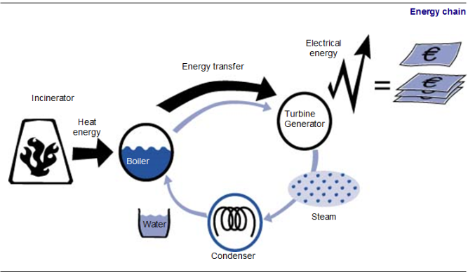
Le coût de l’incinération des ordures ménagères est ainsi compensé en partie par la vente de l’électricité : c’est la valorisation énergétique.
Son rôle est de transformer l’énergie de la vapeur produite dans la chaudière en énergie mécanique sous forme de rotation. Cette transformation va de pair avec la transformation d’eau en vapeur et de vapeur en eau (cf. modules 12 et 13).
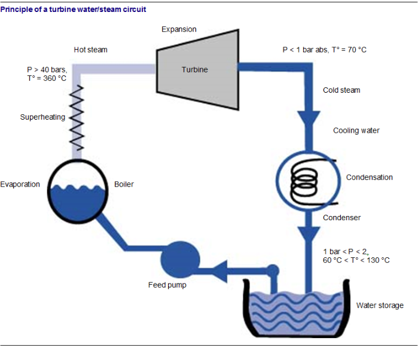
La qualité de l’eau est importante si on ne veut pas corroder ni encrasser les ailettes de la turbine avec de la vapeur de mauvaise qualité (ceci est l’objet du module 14, qui traite de la qualité de l’eau au niveau du poste de traitement de l’eau).
Un autre paramètre déterminant la qualité de la vapeur qui arrive dans la turbine est la bonne conduite de la chaudière : une mauvaise conduite peut provoquer un primage (gouttelettes d’eau dans la vapeur). La vapeur doit être totalement sèche et dépourvue de gouttelettes d’eau.
La température et la pression de celle-ci sont donc primordiales (cf. module 12). La présence de gouttelettes d’eau dans la vapeur aurait pour conséquence une détérioration importante des ailettes de la turbine. En effet la vitesse de la vapeur peut approcher les 300 m/s (le mur du son) dans la turbine.
Le principe de cette transformation est simple : on dirige de la vapeur à haute pression sur une sorte de grosse roue munie de pales inclinées et montées sur un axe de rotation. Cet axe va se mettre en mouvement sous la poussée de la vapeur et l’on va ainsi transformer la vitesse linéaire de la vapeur en vitesse de rotation de l’axe (un peu comme un moulin à vent).
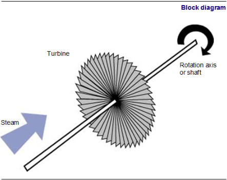
Pendant cette opération, la vapeur perd une grande partie de son énergie. La pression et la température chutent. C’est ce qu’on appelle la détente. On transforme ainsi l’énergie thermique produite dans la chaudière en énergie cinétique (vitesse) de la vapeur, puis en énergie mécanique au niveau de la turbine. Cette énergie est rarement utilisée telle quelle. La plupart du temps, on la transforme en énergie électrique grâce à un alternateur.
Lorsque toute la vapeur est consommée dans la turbine, la turbine est dite « à condensation » ; lorsqu’en sortie de turbine la pression est supérieure à 1 bar, la turbine est dite « à contre-pression ».
Pour des raisons pratiques, la détente de la vapeur est réalisée en plusieurs fois, dans différentes parties de la turbine : une première détente se déroule dans une première série d’aubes haute pression, puis une seconde détente se déroule dans des aubes basse pression ; ce type de turbine est dénommée multi-étagée. Dans les petites turbines, il n’y a qu’une détente dans une aube unique ; ce type de turbine est donc nommée mono-étagée.
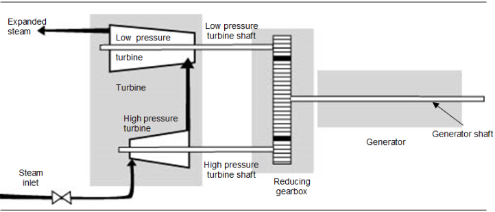
Dans certaines turbines, une première détente est faite dans une turbine HP (haute pression), suivie d’une turbine BP (basse pression). Leurs axes de rotation sont reliés mécaniquement entre eux par un réducteur, lui-même couplé à l’axe de l’alternateur, ce qui permet d’avoir des vitesses différentes sur l’axe du corps HP et sur celui du corps BP défini par le rapport de réduction.
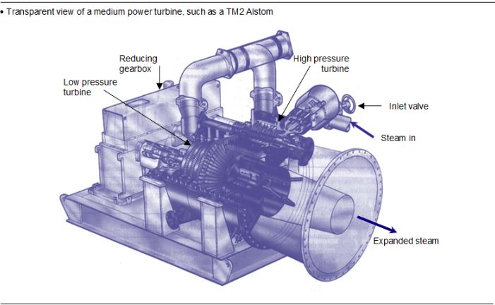
Une turbine est constituée de plusieurs éléments distincts dont voici la liste des principaux :
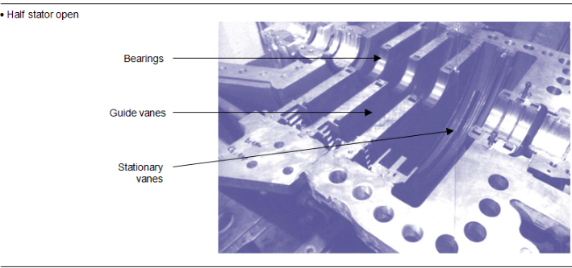
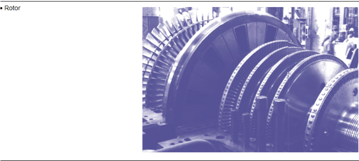
Les turbines mono-étagées ne sont constituées que d’une seule roue.
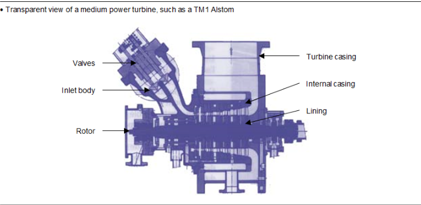
Le corpsIl constitue l’ossature. Il est formé de deux parties assemblées selon le plan horizontal par des broches et des boulons. En fonction des zones HP ou BP, les types d’acier sont différents : acier moulé dans les zones haute pression, acier moulé ou acier chaudronné dans les zones basse pression.
Les directricesCe sont les disques qui supportent les aubes fixes. Elles constituent les tuyères qui assurent la détente de la vapeur. Comme les corps, elles sont en deux parties assemblées.
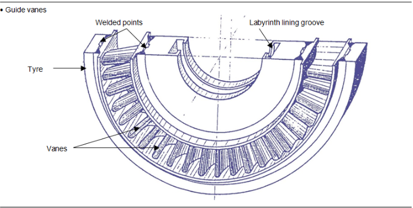
RotorsIl faut faire la distinction entre :
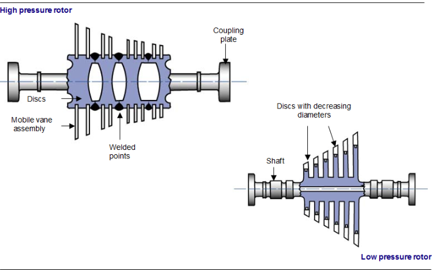
Les aubes mobilesElles sont en acier allié, à haute teneur en chrome. Elles ont la forme d’une ailette, en raison du rôle qu’elles doivent jouer. Elles sont fixées sur le rotor par enfourchement, puis elles sont chevillées. Elles sont reliées entre elles par des bandages pour augmenter la rigidité de l’ensemble.
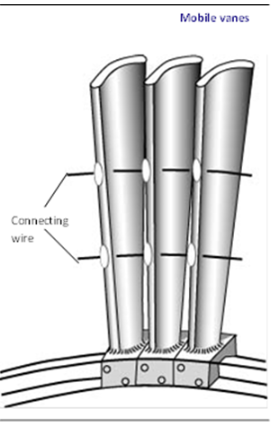
Les paliers et la butéeIls maintiennent la ligne d’arbre en position et autorisent la rotation. On trouve deux paliers radiaux par rotor. On utilise les roulements à rouleaux pour les petites puissances, et les coussinets pour les puissances supérieures. La forme des coussinets dépend des charges et de la vitesse de rotation : circulaire, citronné, à lobes, à patins…
La butée axiale est située entre le rotor HP et le premier rotor BP. Elle définit le point fixe de l’arbre, à partir duquel les dilatations thermiques ont lieu. Les turbines à double flux de vapeur équilibrent les poussées axiales et autorisent donc des butées plus petites. L’ensemble des paliers et des butées est lubrifié par circulation d’huile.
Les organes de sectionnement et de réglageL’obturateur fonctionne en tout ou rien. Il permet d’isoler la turbine du barillet HP en fermant l’arrivée vapeur juste avant les soupapes de réglage.
Les soupapes de réglage du débit vapeur admis dans la turbine fonctionnent en régulation. Elles laissent passer plus ou moins de vapeur en fonction de la puissance demandée.
Ces organes peuvent être réglés manuellement ou motorisés par un circuit d’huile dit « circuit d’huile de réglage ».
Le vireurLe vireur est un petit moteur placé en bout d’arbre de réducteur. Il sert à faire tourner la turbine lorsqu’elle n’est pas alimentée en vapeur (lors d’arrêt de maintenance ou sur déclenchement de sécurité). Il évite ainsi un fléchissement de l’arbre dû au poids de la turbine.
Il est également utilisé pour le préchauffage de la turbine lors du démarrage de celle-ci. En général les turbines de faible puissance ne sont pas dotées de cet appareil.
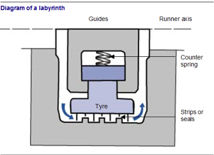
Afin d’améliorer le rendement énergétique il convient de minimiser toutes les fuites de fluides :
Il est possible de limiter les fuites à des valeurs raisonnables par des labyrinthes au niveau des paliers de la turbine. Pour obtenir une étanchéité absolue, on peut y introduire de la vapeur de barrage qui a pour but de contrer la vapeur qui tente de s’échapper par une contre pression de vapeur plus forte et surtout d’empêcher toute entrée d’air dans le circuit vapeur.
Les tuyères sont utilisées afin d’augmenter la vitesse de la vapeur avant son passage dans les aubages du rotor. Ces tuyères sont généralement de forme convergente divergente pour permettre une augmentation constante de la vitesse de la vapeur (la partie divergente sert à compenser le phénomène de pressurisation de la vapeur dans la partie convergente).
Les courbes de vitesse et de pression sont valables pour le cas où la vitesse de la vapeur est au moins égale à celle du son. Cette vitesse « sonique » permet de faire passer un plus grand débit de vapeur dans la turbine sans en modifier les caractéristiques.
En fait, la turbine est constituée d’une succession de tuyères (aubages fixes solidaires du stator) et d’aubages mobiles (fixés sur le rotor) qui produisent le couple de rotation.
Selon la forme des aubages fixes et mobiles (convergents ou pas), on aura donc des caractéristiques différentes de pression et de vitesse dans ces aubages. De ce fait, le lieu de transfert de l’énergie thermique en énergie mécanique va se déplacer.
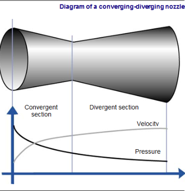
Il existe trois types de turbines :
Dans ce type de turbine, la transformation « énergie thermique-énergie mécanique » se fait entièrement dans les aubages fixes sous forme de mise en vitesse de la vapeur.
Nota : Fp est la force de pression résultante qui entraînera le rotor de la turbine.
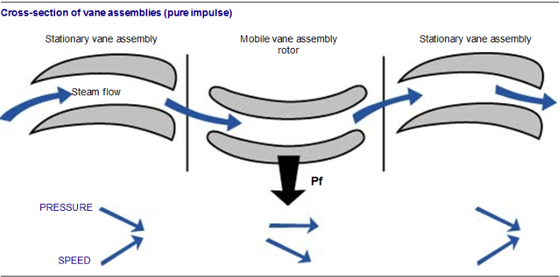
Turbines à réaction pureDans ce type de turbine, la transformation « énergie thermique-énergie mécanique » se fait entièrement dans les aubages mobiles. Ce type de turbine n’est jamais utilisé. Elle ne figure dans ce document qu’à titre explicatif pour bien comprendre le principe de la réaction. Les turbines dites « à réaction » sont en fait des turbines à degré de réaction et sont présentées ci-après.
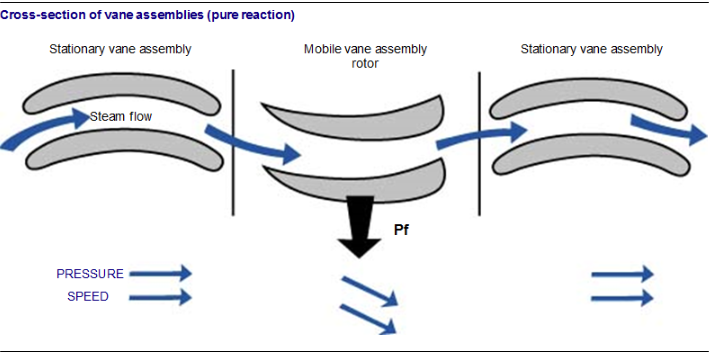
Les turbines à degré de réactionDans ce type de turbine, la transformation « énergie thermique-énergie mécanique » se fait à la fois dans les aubages fixes et dans les aubages mobiles.
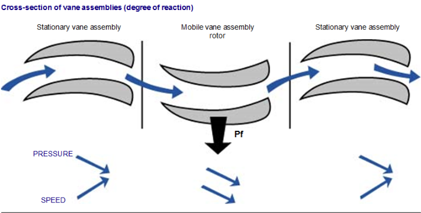
Il faut distinguer deux circuits d’huile distincts dans un groupe turboalternateur moyenne puissance : celui de l’huile de régulation et celui de l’huile de graissage.
Huile de contrôleLe circuit d’huile de régulation sert à fournir la pression nécessaire pour actionner les soupapes d’admission de la turbine et l’obturateur (ou vanne d’arrêt). Il est pressurisé à environ 120 bars. Ce circuit est très important car il sert à l’arrêt sur sécurité et au réglage de la vitesse de la turbine.
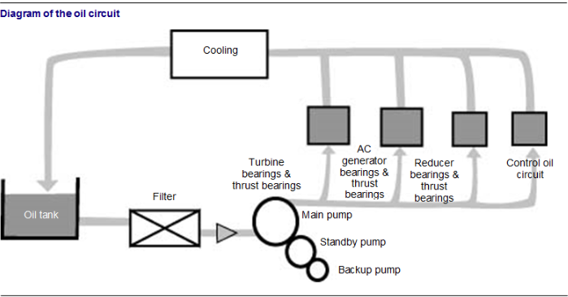
Huile de graissageLe circuit d’huile de graissage sert à assurer la lubrification, le refroidissement des paliers, ainsi que des butées de la turbine, de l’alternateur et du réducteur. L’huile s’échauffe lors de la lubrification des paliers, il faut donc la refroidir à l’eau ou à l’air grâce à des échangeurs. La température est à surveiller en permanence. En général, le réservoir d’huile est équipé d’une connexion reliée à une centrifugeuse. Cette centrifugeuse sert à éliminer les traces éventuelles d’eau ou les particules solides contenues dans l’huile.
Pour certaines fonctions du procédé, on a besoin de vapeur pour alimenter des réchauffeurs de tout ordre (réchauffage air de combustion, réchauffage condensats, réchauffage bâche alimentaire ou encore dégazeur). Comme la turbine présente différents étages, il est possible d’effectuer des soutirages ou extractions à différents endroits. En fonction de l’endroit du soutirage, on obtient une pression donnée. La vapeur va alors alimenter soit les réchauffeurs, soit des réservoirs vapeur (ou barillets), puis sera distribuée.
On peut qualifier les soutirages de BP, MP et HP (basse pression, moyenne pression et haute pression), mais le plus souvent seul le soutirage MP est réalisé. Il est en général pris à la détente du corps HP à une pression d’environ 7 à 8 bars et une température avoisinant les 200 °C. Quant au soutirage BP, il est pris à la détente du corps BP à une pression légèrement supérieure à 1 bar absolu et à une température d’environ 100 °C, pour réchauffage des condensats par exemple.
Avant de démarrer la turbine un certain nombre d’opérations de contrôle des sécurités, de mise en fonction des annexes du GTA, de purges, … sont nécessaires. Celles-ci ne font pas l’objet du présent document et sont détaillées dans le mode opératoire de fonctionnement.
On distingue le démarrage à froid de la turbine (si elle est à l’arrêt depuis une durée supérieure à une limite définie par le constructeur) et le démarrage à chaud de celle-ci. En effet, la turbine froide doit être réchauffée à vitesse réduite avant d’admettre sa pleine charge de vapeur pour éviter la présence de condensats qui abîmeraient les aubages et un choc thermique trop important qui endommagerait gravement le matériel.
Démarrage à froidCette phase s’effectue avec l’alternateur non couplé au réseau EDF. La régulation se fera donc uniquement sur la vitesse (et non sur la puissance électrique produite).
Il y a alors deux façons de procéder selon les constructeurs :
Pour le démarrage à chaud, la démarche est la même mais avec des temps de palier plus courts. Les opérations précises à réaliser au cours de ces démarrages sont détaillées dans les modes opératoires définis par le constructeur.
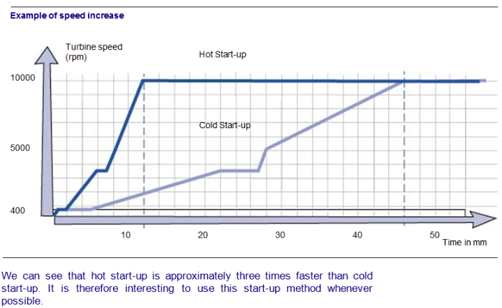
On voit donc que le démarrage à chaud est environ trois fois plus rapide que le démarrage à froid. Il sera donc avantageux d’utiliser ce type de démarrage chaque fois que cela est possible.
La turbine doit être protégée contre certaines conditions de fonctionnement qui risquent d’être dangereuses. On a donc déterminé cinq sécurités principales sur la turbine, entraînant la fermeture de la vanne d’admission vapeur et la déconnexion de l’alternateur par rapport au réseau EDF (ainsi que le passage de la vapeur sur le contournement turbine) :
Évidemment, d’autres sécurités peuvent entrer en ligne de compte, comme la vibration haute des paliers, l’échauffement trop important de ceux-ci, le dysfonctionnement du circuit d’huile ou d’un des organes importants du poste d’eau, mais elles ne sont pas détaillées ici.
Maintenance Le lignageAfin que le GTA puisse fonctionner convenablement, il faut que tous ses éléments soient alignés correctement : une opération de lignage est donc nécessaire. Le lignage optimum est celui qui n’entraîne pas d’autres efforts que ceux dus aux poids des rotors.
Objectifs de la maintenanceÉtant donné l’importance cruciale que représente le GTA dans la valorisation énergétique de l’incinération d’ordures, il faudra veiller tout particulièrement à sa maintenance.
Les objectifs de cette maintenance sont les suivants :
Tous les quatre ans pour les révisions des organes d’admission vapeur. Tous les quatre ans pour les révisions des corps HP et BP. Le détail des interventions est reporté en annexe à la fin du présent module.
Le rôle de l’alternateur est de transformer l’énergie mécanique produite par la turbine (en termes de couple moteur et de vitesse de rotation) en énergie électrique qui sera utilisée pour une part sur le site et pour une autre part envoyée sur le réseau EDF.
Nous avons vu que la turbine produisait un mouvement de rotation grâce à l’énergie contenue dans la vapeur. Voyons maintenant comment cette rotation se transforme en électricité.
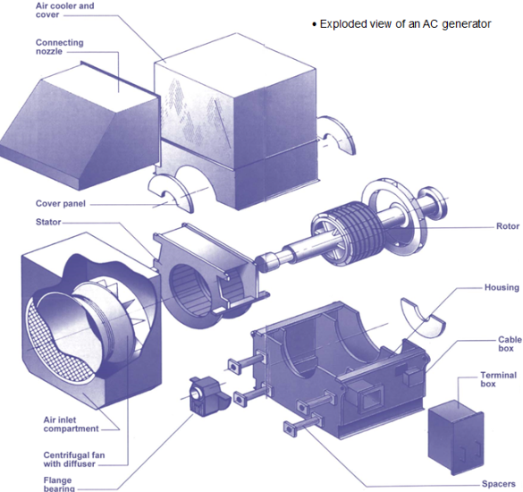
Une expérience permet facilement d’illustrer ce phénomène : considérons un aimant placé sous une feuille de papier et saupoudrons celle-ci de limaille de fer ; la limaille se répartit comme illustré sur la figure suivante.
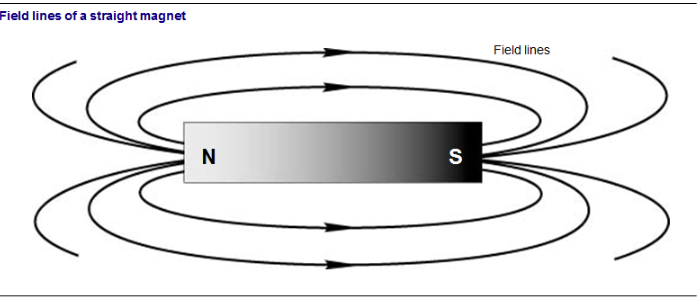
Nous avons mis en évidence des lignes invisibles appelées lignes de champ. En chaque point d’une ligne de champ, le positionnement de la limaille de fer indique la direction du champ magnétique. Le nombre total des lignes de champ d’un champ magnétique est appelé flux magnétique.
Magnétisme et courants électriquesLorsqu’un courant électrique circule dans un conducteur, celui-ci génère, exactement comme un aimant, un champ magnétique dont l’intensité et la direction dépendent du sens du courant. La figure suivante illustre le champ magnétique engendré par un conducteur portant un courant vers le bas.
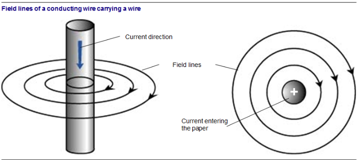
Si la direction du courant est inversée, les lignes de champ changent de sens.
Force s’exerçant sur un conducteur baignant dans un champ magnétiqueSi un conducteur est placé dans un champ magnétique et que l’on y fait circuler un courant, une force s’exercera et tendra à le déplacer dans le champ.
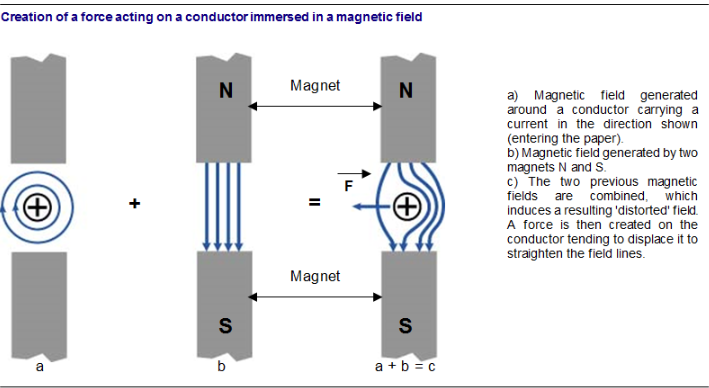
On utilise ce principe dans le moteur électrique pour produire un mouvement mécanique à partir d’énergie électrique.
Induction dans un champ magnétiqueNous venons de voir qu’un conducteur parcouru par un courant électrique et placé dans un champ magnétique produit une force. Le phénomène inverse existe également : le déplacement relatif d’un conducteur et d’un champ magnétique produit un courant électrique dans le conducteur. Ce courant est appelé « courant induit » ou « force électromotrice (f.é.m.) induite ». On utilise ce principe dans les alternateurs pour produire du courant électrique à partir d’énergie mécanique.
Courant alternatifDéfinition
Dans un conducteur qui ne porte pas de courant, les électrons libres se déplacent de façon désordonnée.
Rappel : Les électrons sont l’un des constituants de la matière. Ce sont de petites particules élémentaires chargées négativement. La plupart tournent autour de noyaux formés de protons et de neutrons (d’autres particules élémentaires). L’ensemble noyau + électrons forme l’atome. Cependant, un certain nombre d’électrons ne sont liés à aucun noyau atomique : ils circulent librement et de façon désordonnée entre les atomes ; on les appelle électrons libres. Ce sont eux les transporteurs du courant dans la matière.
Un courant continu est causé par un mouvement d’ensemble des électrons libres dans un même sens et une même direction. Lorsqu’un courant alternatif circule dans le fil, le mouvement d’ensemble des électrons est tantôt dans un sens, tantôt dans l’autre.
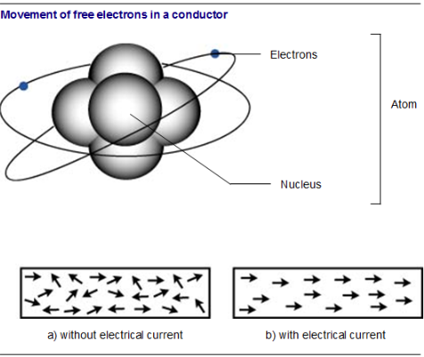
ProductionLa quasi-totalité de l’énergie électrique est produite à l’échelle industrielle de façon électromagnétique. On la produit en utilisant un conducteur qui coupe des lignes de champ magnétique. Pour ce faire, il doit exister un mouvement de rotation du conducteur dans un champ magnétique stationnaire ou un champ magnétique qui tourne et rencontre des conducteurs stationnaires.
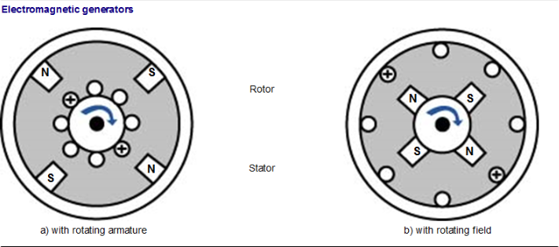
La figure ci-dessus illustre ces deux possibilités. L’agencement a) est utilisé pour la production de courant continu (le courant est redressé). L’agencement b) est utilisé pour produire du courant alternatif, l’induit est alors appelé stator (stationnaire) et on peut facilement récolter la f.é.m. induite à ses bornes fixes. Ceci représente un avantage considérable pour manipuler des courants et tensions élevés.
Par exemple les grosses génératrices à courant continu industrielles peuvent fournir une puissance de 5 000 kW à 750 V, alors que les génératrices à courant alternatif (les alternateurs) sont conçues pour fournir des puissances allant jusqu’à 1 000 MW à 26 000 V.
La tension alternative peut aussi être facilement élevée ou abaissée à l’aide de transformateurs, selon les besoins de transmission et de distribution.
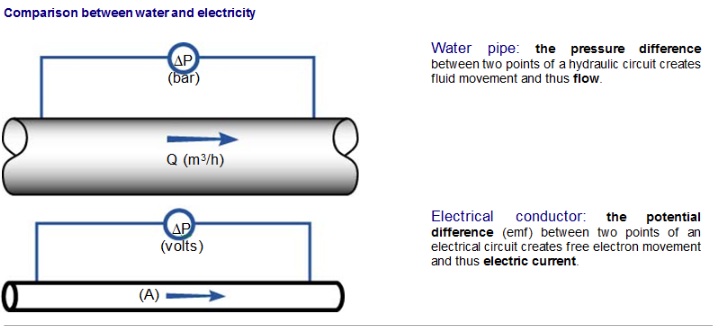
Facteur de puissanceComparons un fil électrique et une conduite d’eau. Les deux véhiculent une forme d’énergie : le conducteur électrique transporte l’énergie électrique, et la conduite d’eau de l’énergie hydraulique. On peut associer la pression de l’eau dans la conduite et la force électromotrice (tension ou différence de potentiel) dans le conducteur. Plus la pression d’eau est grande, plus l’épaisseur de la conduite doit être grande, et, de même, plus la tension est élevée, plus l’isolant des câbles doit être de qualité.
On peut aussi associer le courant électrique et le débit d’eau. Plus le débit d’eau est important, plus le diamètre de la conduite doit être important, et de même, plus le courant électrique est grand, plus le diamètre des fils doit être élevé.
La puissance hydraulique est proportionnelle à la pression (bar) et au débit (m3/h). La puissance électrique (Watts, W) est proportionnelle au courant (Ampères, A) et à la force électromotrice (tension, en Volts, V).
Pour un circuit simple, du genre de ceux que l’on trouve dans une maison, la puissance électrique est simplement le produit du courant par la tension :
\[ P_{(W)} = I_{(A)} V_{(V)} \]
En électricité, le courant alternatif change de sens périodiquement, cette fréquence de changement se mesure en Hertz (Hz) et correspond à 50 Hz sur le réseau en France : c’est-à-dire que le courant change 100 fois de sens en 1 seconde.
De façon théorique, considérons une conduite d’eau dont la pression change instantanément de sens ; il y aura donc un très petit temps de réaction avant que le débit ne s’inverse pour réagir au changement de sens de la pression. Ainsi, pendant ce court laps de temps, la pression et le débit se seront plus « en phase », le débit aura un petit retard sur la pression. Ce décalage dans le temps est nommé déphasage.
En électricité, et pour des raisons différentes, il y a aussi déphasage entre le courant et la tension dans les applications utilisant les générateurs et/ou les moteurs. Dans ces cas d’applications « inductives », le déphasage est permanent.
Ce déphasage explique la différence entre une puissance mesurée (d’un moteur, par exemple) et calculée (en multipliant Intensité par Tension).
Exemple : Mesurons la Tension, le Courant et la Puissance utilisés par un moteur, on obtient : Tension : 223 V Courant : 49 A Puissance (mesurée) : 9 354 W Par le calcul, on obtient pour la puissance : P (calculée) = Tension x Courant = 223 x 49 ² 11 000 W La différence entre 11 000 W calculé et 9 354 W mesuré s’explique par le déphasage entre la tension et le courant.
Cette différence est caractérisée par le Facteur de puissance (FP), aussi appelé cosinus phi ou $ $.
Dans notre exemple, Pf = 9 354 / 11 000 = 0,85 ou 85\ Plus la différence de phase est grande, plus le facteur de puissance est petit. La puissance apparente est calculée comme suit :
\[ P = V I (Pf) \]
On cherche généralement à maintenir ce facteur au-dessus de 90\
On a vu que pour créer de l’énergie électrique à partir d’énergie mécanique, il faut un champ magnétique (inducteur) et un conducteur électrique (induit) se déplaçant par rapport à ce champ.
Dans un alternateur, le champ magnétique est créé par un électro-aimant (noyau ferreux entouré par une bobine alimentée en courant continu). Cet électro-aimant est en rotation, entraîné par la turbine. Cette partie tournante est appelée rotor.
Le conducteur, dans lequel est produit le courant électrique, est constitué de plusieurs bobines. Cette partie est fixe et est appelée stator.
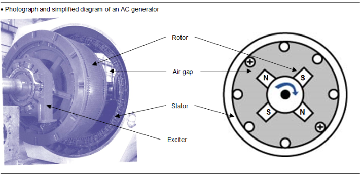
RotorLe rotor est la partie tournante qui est reliée directement à l’arbre de la turbine. Grâce aux bobinages dans lesquels passe un courant, il génère un champ magnétique tournant. Ces bobinages sont dits « inducteurs ».
L’entreferOn appelle entrefer l’espace existant entre chaque composant ferreux du circuit magnétique. Il s’agit principalement de la distance qui sépare le noyau ferrique du rotor de la structure du stator.
Sa valeur est de 1/100 à 5/100 du diamètre du rotor. Il est plus grand sur les alternateurs à faible polarité (deux pôles). La position du rotor dans le stator doit être réglée de façon que le décentrage soit inférieur à 10\
StatorLe stator a deux rôles :
Le noyau est composé d’un empilage de tôles de 0,5 à 1 mm d’épaisseur, isolées entre elles par un vernis ou par corrosion chimique des parois ceci afin d’éviter des courants (de Foucault) parasites qui produisent des échauffements.
Le bobinage stator est composé de rubans de cuivre et comporte deux systèmes d’isolation :
Nota : ce chapitre ne doit en aucun cas se substituer aux procédures de conduite dont disposent les opérateurs : ce qui suit n’est donné qu’à titre d’information.
ExcitationPour qu’un alternateur puisse fournir de l’électricité, il faut lui imposer une excitation initiale. Le principe est d’installer en bout d’arbre alternateur un autre alternateur plus petit appelé alternateur d’excitation, dont l’inducteur est fixe et l’induit est le rotor. Ce dernier est solidaire de l’arbre, donc tournant.
L’inducteur de l’alternateur d’excitation est alimenté par un transformateur de soutirage placé aux bornes de l’alternateur ou directement sur le réseau.
On crée ainsi du courant alternatif qui est redressé par un système de diodes tournantes puis envoyé sur le bobinage rotor de l’alternateur principal. Ce système est appelé « sans contacts glissants » ou « brushless ». Par mesure de sécurité, plusieurs diodes peuvent être placées en parallèle, avec fusible en cas de défaut de l’une d’entre elles.
Au démarrage, le système est généré grâce à l’aimantation persistante (rémanente) du rotor de l’alternateur principal ou grâce à une excitatrice à aimants permanents. La régulation agit sur le courant d’excitation de l’excitatrice. Il est nettement plus faible que le courant inducteur principal (10 à 100 fois).
L’excitation « sans contacts glissants » est actuellement généralisée sur la totalité des alternateurs. Le point faible était la tenue mécanique et thermique des diodes tournantes. Ces composants sont maintenant très fiables, et les excitations « sans contacts glissants » sont devenues plus fiables dans leur ensemble.
Synchronisation des alternateursL’alternateur ne peut débiter sa puissance électrique sur un réseau que si son courant est correctement couplé ou synchronisé au courant de ce réseau. Pour pouvoir synchroniser un alternateur avec le réseau local ou faire fonctionner deux ou plusieurs alternateurs en parallèle, il convient que :
Lorsque l’alternateur et le réseau satisfont aux exigences énumérées ci-dessus, on dit qu’ils sont en phase. Il y a plusieurs méthodes permettant de synchroniser.
Synchronisation à l’aide d’un synchronoscopeIl s’agit de la meilleure façon de synchroniser les alternateurs. Le synchronoscope comporte un cadran avec deux indications « lent » et « rapide » indiquant si la vitesse de l’alternateur que vous souhaitez coupler au réseau génère une fréquence de courant inférieure ou supérieure à celle du réseau.
Il suffit de régler la tension de l’alternateur de façon à ce qu’elle corresponde à celle du réseau, de régler sa vitesse de rotation jusqu’à ce que le synchronoscope indique qu’elle est à peu près correcte et de fermer l’interrupteur lorsque l’aiguille est à la verticale.
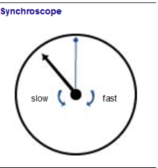
La régulation consiste à maintenir la turbine à la vitesse assignée, et à assurer la puissance demandée par le réseau (c’est-à-dire la puissance nominale). Elle agit sur le degré d’ouverture des vannes d’admission de vapeur. Il faut donc régler deux paramètres à l’aide d’un seul actionneur. Ceci est théoriquement impossible. En fait, il faut considérer plusieurs modes de fonctionnements du GTA (groupe turboalternateur).
Modes de fonctionnement du GTAEn exploitation normale, le GTA peut se trouver dans trois cas de fonctionnement :
Tout le débit vapeur produit par les fours chaudière passe par la turbine (contournement fermé). La régulation turbine règle l’ouverture des soupapes d’admission de façon à maintenir constante la pression dans le barillet HP.
Dans ce type de fonctionnement, la puissance active délivrée par l’alternateur est une conséquence de l’énergie apportée par les déchets (débit, pression et température de vapeur) et la température extérieure (de par son influence sur le vide obtenu par la performance de l’aérocondenseur). Pour une marche nominale des fours on doit obtenir une puissance nominale d’électricité produite (dépends du dimensionnement).
Usine couplée au réseau, GTA en manuelLe GTA fonctionne à ouverture de soupapes fixée par l’opérateur (par action + vite/– vite de la salle de contrôle ou de l’armoire GTA).
Ce mode de fonctionnement est utilisé dans les phases transitoires pendant la montée en charge avant le passage en auto.
La régulation de pression du barillet HP est alors assurée par le contournement turbine.
ÎlotageOn appelle îlotage le fonctionnement de la turbine lorsque l’alternateur n’est plus couplé au réseau EDF. Ce cas de fonctionnement se produit lors d’un défaut sur la ligne haute tension provoquant une ouverture du disjoncteur de couplage (voir schéma régulation de puissance). La régulation turbine passe alors en régulation de vitesse pour maintenir la fréquence du courant délivré à l’usine à 50 Hz.
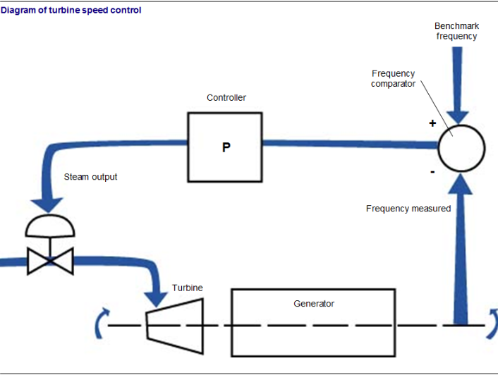
Le débit vapeur consommé par le GTA correspond au débit nécessaire pour assurer la puissance nécessaire au fonctionnement de l’usine.
Ce débit est généralement beaucoup plus faible que le débit de vapeur produit. L’excédent est évacué par le contournement turbine qui doit fonctionner très rapidement puisque le phénomène d’îlotage est très rapide (quelques dixièmes de secondes).
Dans ce mode de fonctionnement, la régulation d’excitation alternateur, c’est-à-dire la régulation du courant rotorique, repasse instantanément en régulation de tension.
L’alternateur en fonctionnement dégage beaucoup de chaleur et donc il dispose toujours d’un système de refroidissement. Dans de nombreux cas, ce refroidissement est réalisé par un échangeur (de chaleur) air/eau.
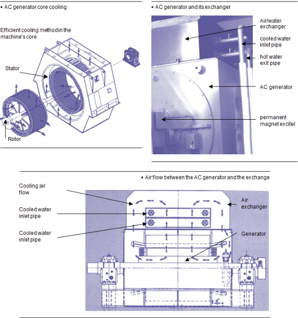
Il est constitué de tubes métalliques dans lesquels passe de l’eau froide. Cette eau refroidit l’air qui circule dans l’alternateur. Ainsi, la température de l’alternateur est maintenue dans sa plage de fonctionnement.
L’eau est elle-même refroidie par un autre échangeur eau/air situé le plus souvent à l’extérieur des bâtiments de l’usine.
L’échangeur air/eau de l’alternateur évite d’encrasser l’intérieur de l’alternateur. Dans ce cas, il n’y a pas d’air chargé de poussière qui provient de la salle du tubo-alternateur.
Les conditions d’exploitation, la qualité de la vapeur, la régularité des contrôles, les méthodes de surveillance et d’analyse sont autant de paramètres qui interviennent dans la définition des interventions. L’exploitant reste le plus apte à déterminer l’étendue de l’entretien qu’il souhaite réaliser.
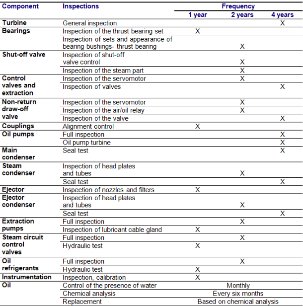
[width=] {Images/M18/M18_31.png}
Les anomalies mentionnées ci-dessous sont détectées lors d’une visite d’entretien à la suite d’une alarme ou d’un déclenchement dû à un échauffement des paliers :
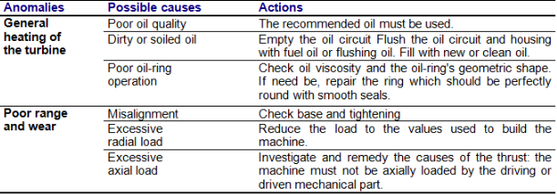
[width=] {Images/M18/M18_33.png}
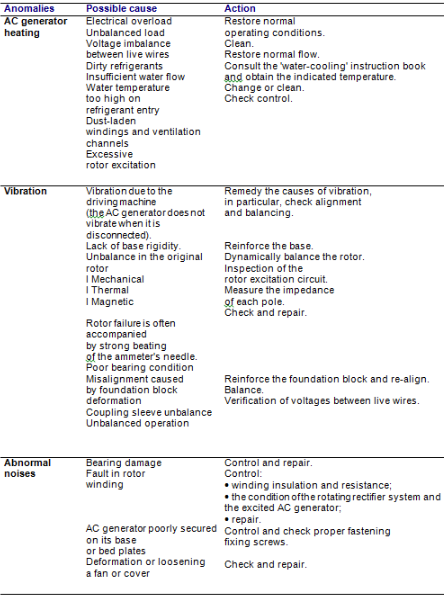